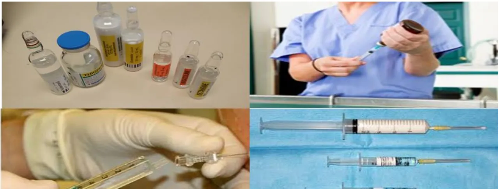
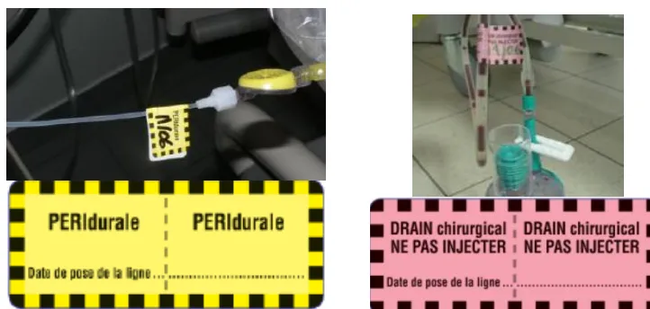
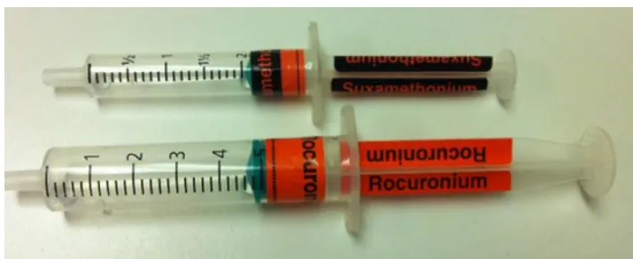
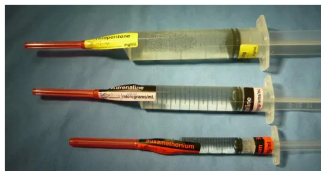
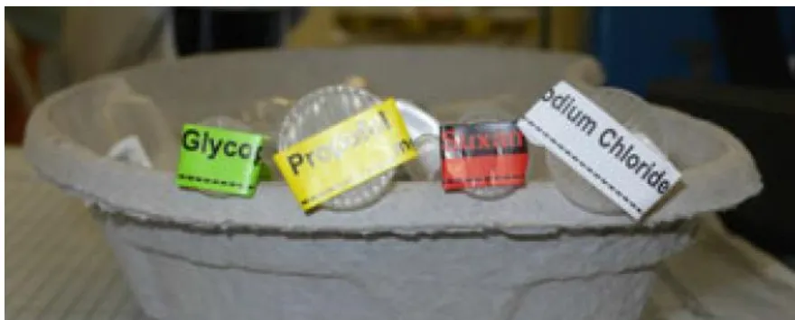
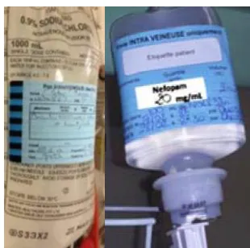
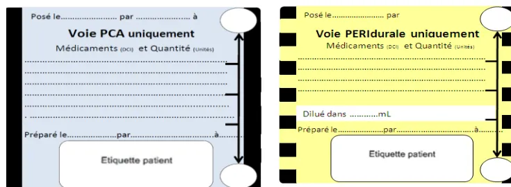
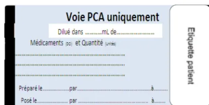
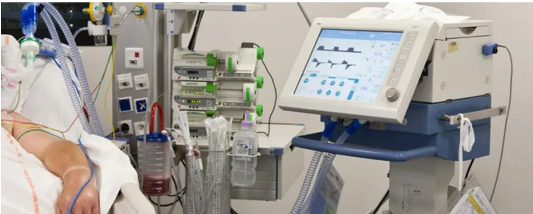
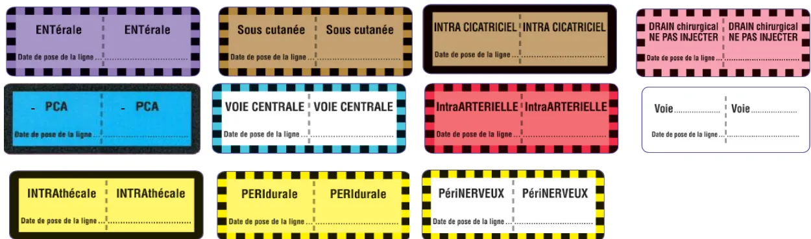

Préconisations de la SFAR
en partenariat avec la SFPC
Actualisation 2016

Les préconisations 2016 ont été élaborées communément par la SFAR et la SFPC :
Ségolène ARZALIER-DARET, anesthésiste réanimateur, CHU de Caen, SFAR.
Remy COLLOMP, pharmacien, CHU de Nice, Vice-président SFPC.
Marie MARCEL, infirmière anesthésiste, HCL, CHU Lyon Sud, SFAR.
Stéphanie PARAT, pharmacien, HCL, CHU Lyon Sud, SFPC.
Vincent PIRIOU, anesthésiste réanimateur, HCL, CHU Lyon Sud, SFAR.
Catherine STAMM, pharmacien, responsable Système de Management de la Qualité Prise en Charge médicamenteuse du patient, HCL, CHU Lyon, SFPC.
Alexandre THEISSEN, anesthésiste réanimateur, CH Princesse Grace de Monaco, SFAR.
Pierre TROUILLER, anesthésiste réanimateur, Hôpital Antoine Béclère, APHP, Clamart, SFAR.
Ségolène ARZALIER-DARET, anesthésiste réanimateur, CHU de Caen.
Frédéric AUBRUN, anesthésiste réanimateur, HCL, CHU La Croix-Rousse, Lyon.
Gilles BOCCARA, Hôpital américain, Neuilly sur Seine.
Marie-Paule CHARIOT, anesthésiste réanimateur Clinique des Cèdres, Cornebarrieu.
Didier FRESSARD, anesthésiste réanimateur, CHG d'Arcachon.
Benjamin GAFSOU, anesthésiste réanimateur, CMCO d'Evry.
Jean LEMARIE, anesthésiste réanimateur, Clinique Saint Léonard, Trélazé.
Vincent PIRIOU, anesthésiste réanimateur, HCL, CHU Lyon Sud.
Guillaume de SAINT MAURICE, anesthésiste réanimateur, HIA Percy, Clamart.
Pierre TROUILLER, anesthésiste réanimateur, Hôpital Antoine Béclère, APHP, Clamart.
Alexandre THEISSEN, anesthésiste réanimateur, CH Princesse Grace de Monaco.
Patrick-Georges YAVORDIOS, anesthésiste réanimateur, Clinique Convert, Bourg en Bresse.
Brigitte BONAN, pharmacien, Hôpital Foch, Suresnes.
Virginie CHASSEIGNE, pharmacien, CHU de Nîmes.
Edith DUFAY, pharmacien, CH de Lunéville.
Bénédicte GOURIEUX, pharmacien, CHU de Strasbourg.
Clarisse ROUX, pharmacien, CHU de Nîmes.
Rémi VARIN, pharmacien, CHU de Rouen, président de la SFPC.

| Introduction..... | 6 |
| Synthèse des préconisations..... | Erreur ! Signet non défini. |
| Glossaire..... | 9 |
| I. ETAT DES LIEUX..... | 9 |
| I.1. Erreurs médicamenteuses..... | 9 |
| I.2. Erreurs médicamenteuses en anesthésie..... | 10 |
| I.3. Erreurs médicamenteuses en réanimation..... | 11 |
| I.4. Justificatifs des préconisations sur ce thème ..... | 11 |
| II. PRÉCONISATIONS GÉNERIQUES EN ANESTHÉSIE ET RÉANIMATION..... | 12 |
| II.1. Préconisations stratégiques et organisationnelles..... | 12 |
| II.1.A. Préconisations stratégiques..... | 12 |
| II.1.B. Préconisations organisationnelles ..... | 13 |
| Focus sur la prévention des erreurs concernant le traitement habituel du patient..... | 14 |
| II.1.C Préconisations vis-à-vis de la formation ..... | 14 |
| II.2. Préconisations vis-à-vis des erreurs liées à l'administration ..... | 15 |
| II.2.A. Principes généraux concernant la préparation..... | 16 |
| II.2.B. Prévention des erreurs de reconstitution..... | 17 |
| II.2.C. Prévention des erreurs d'administration ..... | 18 |
| II.2.D. Place des étiquetages ..... | 19 |
| III. PRÉCONISATIONS SPÉCIFIQUES EN ANESTHÉSIE..... | 27 |
| Formalisation de la préparation des plateaux d'anesthésie..... | 27 |
| IV. PRÉCONISATIONS SPÉCIFIQUES EN RÉANIMATION..... | 29 |
| IV.1. Erreurs d'administration ..... | 30 |
| IV.2. Erreurs de reconstitution ..... | 30 |
| V. ANALYSE DES ERREURS ET RETOUR D'EXPÉRIENCE ..... | 32 |
| V.1. Mise en place d'une REMED (Revue d'Erreurs MEDicamenteuses) ..... | 32 |
| V.2. Retour d'expérience ..... | 33 |
| ..... | |
| Grille d'évaluation du niveau de vulnérabilité vis-à-vis des erreurs médicamenteuses en anesthésie réanimation ..... | 35 |

| Annexes..... | 41 |
| Annexe 1 ..... | 41 |
| Annexe 2 ..... | 42 |
| Annexe 3 ..... | 42 |
| Bibliographie..... | 44 |

La fréquence des erreurs médicamenteuses restant encore aujourd'hui élevée dans le domaine de l'anesthésie et de la réanimation, ainsi que leur gravité potentielle et leur caractère évitable, justifient l'actualisation de préconisations pratiques à destination des professionnels de santé et des gestionnaires de risques.
Dans ce cadre, la Société Française d'Anesthésie Réanimation (SFAR), en partenariat avec la Société Française de Pharmacie Clinique (SFPC), a revu en profondeur ses préconisations précédentes datant de 2006. Elles sont présentées de manière détaillée dans ce document (texte long), ainsi que sous forme de synthèse (texte court).
Pour faciliter leur application, en complément des préconisations, une grille d'évaluation est également fournie en fin de document. Cette grille d'évaluation peut être utilisée sous forme d'autoévaluation, d'audit croisé ou d'évaluation externe. Elle est adaptée à différentes situations : visites de risques, préparation à la certification HAS ou programme d'Évaluation des pratiques professionnelles (EPP).


| AAMI | : Association for the Advancement of Medical Instrumentation |
| ACCP | : American College of Clinical Pharmacy |
| AFNOR | : Association Française de Normalisation |
| ALARMe | : Association of litigation and risk management |
| ALR | : Anesthésie loco régionale |
| AMDEC | : Analyse des modes de défaillances, de leurs effets et de leur criticité |
| ANSM | : Agence nationale de sécurité du médicament et des produits de santé |
| APSF | : Anesthesia Patient Safety Fondation |
| CME | : Commission médicale d'établissement |
| CREX | : Comités de Retour d'Expérience |
| CRPV | : Centre régional de pharmaco vigilance |
| DCI | : Dénomination commune internationale |
| DGOS | : Direction générale de l'offre des soins |
| DP | : Dossier pharmaceutique |
| EIG | : Evènements indésirables graves |
| EPPI | : Eau pour préparations injectables |
| FDA | : Food and Drug Administration |
| GDR | : Gestion des risques |
| HAS | : Haute Autorité de Santé |
| NHS | : National Health Service |
| PCA | : Patient Controlled Analgesia |
| PCEA | : Analgésie contrôlée par voie péridurale |
| PECM | : Prise en charge médicamenteuse |
| PSE | : Pousse seringue électrique |
| REMED | : Revue des Erreurs liées aux Médicaments Et aux Dispositifs médicaux associés |
| REX | : Retour d'expérience |
| RMM | : Revues de Mortalité Morbidité |
| SCCM | : Society of Critical Care Medicine |
| SFAR | : Société Française d'Anesthésie Réanimation |
| SFPC | : Société Française de Pharmacie Clinique |
| SSPI | : Salle de surveillance post interventionnelle |

Les événements indésirables graves (EIG) associés aux soins sont un thème de préoccupation majeure à la fois pour les usagers et patients, les professionnels de santé et les tutelles. La réduction du taux des EIG figure parmi les objectifs du rapport annexé à la loi du 9 août 2004 relative à la politique de santé publique. La prise en charge médicamenteuse (PECM) est à l'origine de la troisième cause d'événements indésirables graves, après les actes invasifs et les infections liées aux soins
L'erreur médicamenteuse est l'omission ou la réalisation non intentionnelle d'un acte survenu au cours du processus de soins impliquant un médicament, qui peut être à l'origine d'un risque ou d'un événement indésirable pour le patient [1]. Par définition, l'erreur médicamenteuse est évitable.
La qualité de la prise en charge médicamenteuse s'intègre ainsi dans la gestion globale des risques définie par les dispositions réglementaires. Elle s'appuie notamment sur l'arrêté du 6 avril 2011 (relatif au management de la qualité de la prise en charge médicamenteuse et aux médicaments dans les établissements de santé) [2] précisant les exigences de la gestion a priori et a posteriori des risques liés à la PECM, dont l'informatisation.
Une liste de 12 événements médicamenteux « qui ne devraient jamais arriver » a été élaborée à partir de la démarche des « never events » du National Health Service en Grande-Bretagne ; l'AFSSAPS puis l'ANSM ont participé à ce projet. Ils sont définis dans la circulaire n° DGOS /PF2 n°2012-72 du 14 février 2012 relative au management de la qualité de la prise en charge

médicamenteuse dans les établissements de santé [3]. La plupart des événements médicamenteux de cette liste peuvent se retrouver lors de la pratique de l'anesthésie-réanimation. Un focus est même précisé sur « l'erreur d'administration de spécialités utilisées en anesthésie réanimation au bloc opératoire ». De même, de nombreux médicaments identifiés comme « médicaments à haut risque » par l'arrêté du 6 avril 2011, comme par la littérature et les préconisations internationales sont largement utilisés en anesthésie et réanimation [4-8].
Malgré les démarches entreprises au niveau des établissements de santé, les erreurs médicamenteuses restent fréquentes et présentes à toutes les étapes du processus de prise en charge thérapeutique [9]. On estime que l'erreur survient de 1 fois sur 100 à 1 fois sur 10 à chaque étape de la PECM (prescription [1,10], dispensation, préparation et reconstitution, administration du médicament [11-13]). D'une manière générale, 1% de ces erreurs entraînent des EIG évitables [14-15]. Aux Etats-Unis, elles représentent la 4ème cause des EIG déclarés [16] et sont responsables d'environ 7 000 décès annuels évitables [17]. En France, elles provoquent un EIG toutes les 2 000 journées d'hospitalisation, soit environ 70 000 EIG par an sans nette évolution entre 2004 et 2009 [18]. Comme pour les autres EIG, les origines des EM sont essentiellement d'ordre systémique.
Ainsi, l'APSF (Anesthesia Patient Safety Fondation) a appelé en 2012 à un nouveau paradigme pour aborder la problématique des erreurs médicamenteuses, basé sur la normalisation, la technologie, l'implication des pharmaciens et un changement de la culture de la sécurité [19].
En anesthésie, les études rétrospectives publiées mettent en évidence qu'une erreur médicamenteuse survient de 1 fois sur 900 [20] à 1 fois sur 133 anesthésies [21], mais ce chiffre est encore probablement sous-estimé. En effet une étude prospective observationnelle récente rapporte un taux d'erreur d'environ 1/20 administrations [22].
Cependant, ce chiffre est vraisemblablement sous-estimé car issu essentiellement de déclarations volontaires, méthode peu adaptée à l'identification des erreurs médicamenteuses [23]. En effet, il a été montré que la fréquence des erreurs observées pourrait être 400 fois supérieure à celle des erreurs déclarées [24].
Les erreurs médicamenteuses relevées en anesthésie [25] concernent principalement par ordre de fréquence décroissante : les seringues et les ampoules (50%), les dispositifs médicaux d'administration (26%) et la voie d'administration (14%). Les erreurs relatives aux seringues et ampoules relèvent essentiellement dans 62% des cas d'une confusion de spécialité pharmaceutique et dans 11%, d'une erreur de concentration du médicament. Lors de confusion de spécialités, l'erreur survient dans 55% des cas au moment de l'administration (erreur de seringue), et dans 45% pendant la reconstitution (erreur de spécialité, erreur d'étiquetage). C'est pourquoi les préconisations porteront essentiellement sur cette typologie d'erreurs.
Les travaux actuels portent sur l'évaluation de l'efficacité des mesures de prévention de l'erreur médicamenteuse [26] comme par exemple l'étiquetage des seringues et des perfusions, le rangement des plateaux d'anesthésie ou bien encore le recours à des médicaments prêts à l'emploi.

Le risque d'erreurs ou incidents dans une unité de réanimation a été estimé dans plusieurs études. Il concerne environ 15% à 20% des patients [27], et est lié essentiellement à l'étape administration (50 à 61% des EI déclarés). Certaines séries rapportent jusqu'à l'existence de 2 erreurs / patient / jour [28], avec une origine humaine dans 73% des cas et une évitabilité dans 45-92% des EI déclarés selon les études [27]. Aljadhey et coll. rapportent une incidence d'effets indésirables médicamenteux de 8.5% admissions en service aigu et de 21.1% admissions en réanimation ; 30% d'entre eux sont évitables [29]. Le pronostic vital est mis en jeu dans 13% des cas [27]. Les patients victimes d'erreurs médicamenteuses sont souvent les plus graves, de ce fait, on observe une surmortalité hospitalière et une durée de séjour en réanimation allongée [30].
Certains facteurs de risques d'effets indésirables médicamenteux ont été identifiés chez les patients de réanimation et comportent les lésions rénales, la thrombopénie, l'admission en urgence et l'administration de médicaments par voie intraveineuse [31]. La complexité des pathologies prises en charge en réanimation, l'intensité des soins prodigués, la vulnérabilité des patients, l'environnement de réanimation, pourvoyeur de situations à risque d'erreurs, le nombre de traitements médicamenteux administrés avec leurs différentes formes galéniques, et la diversité des voies d'administration sont autant d'éléments pouvant favoriser la survenue d'effets indésirables induits par les médicaments [32]. La connaissance et la prise en compte de ces facteurs de risque peuvent permettre de limiter la survenue d'effets indésirables médicamenteux.
Suite à cet état des lieux, l'élaboration puis l'actualisation de préconisations de 2007 par la Société Française d'Anesthésie Réanimation (SFAR), en partenariat avec la Société Française de Pharmacie Clinique (SFPC), est justifiée par :

Au niveau stratégique, une structure de soins réalisant des anesthésies et/ou de la réanimation doit mener une réflexion institutionnelle pérenne sur les moyens à mettre en œuvre pour prévenir les erreurs médicamenteuses dans ces secteurs particulièrement à risque. Cette réflexion doit aboutir à la mise en œuvre de mesures de prévention et de traitement spécifiques, formalisées par écrit cohérence étroite avec celles mises en place dans les autres secteurs de la structure et le responsable du système qualité de la prise en charge médicamenteuse. Elles doivent faire l'objet de mesures d'impact et être réévaluées régulièrement. L'ensemble de la démarche conduite par la structure doit être documentée, et les preuves de son efficacité apportées conformément aux dispositions prévues dans l'arrêté du 6 avril 2011 [2].
Un effort particulier doit être porté sur l'aide à la déclaration des événements médicamenteux indésirables évitables, avérés ou potentiels, qui est encore largement insuffisante actuellement [23]. Les EM déclarées doivent faire l'objet d'une analyse détaillée en pluri professionnalité, lors des Revues de Mortalité Morbidité (RMM) par exemple, et le plan d'actions associé suivi et évalué en termes d'efficacité. Cette analyse doit s'appuyer sur une méthode validée et adaptée à ces secteurs particuliers, comme la méthode ALARM ou REMED, cette dernière étant spécifique aux erreurs médicamenteuses (voir chapitre IV).
Le retour d'expérience lié aux analyses des EM doit être organisé auprès des personnes et secteurs ayant déclaré l'événement, mais aussi au-delà, auprès des autres secteurs pouvant être concernés,

tout en respectant les règles de confidentialité vis-à-vis de l'EM initiale. L'organisation régulière de Comités de Retour d'Expérience (CREX) doit être privilégiée.
L'ensemble de la démarche contribue au développement du niveau de la culture sécurité des professionnels de santé, quelle que soit leur discipline.
Au niveau organisationnel, la constitution d'une équipe pluri-professionnelle, incluant au minimum médecin anesthésiste réanimateur, cadre de santé, IADE et IDE de SSPI ou de réanimation et pharmacien, dédiée à la sécurisation de la prise en charge médicamenteuse (PECM), permettant d'analyser tout le processus de prise en charge, de la prescription à l'administration, durant tout le parcours de soins du patient, de son admission à sa sortie, devrait permettre de réduire significativement les erreurs médicamenteuses dans les unités d'anesthésie et de réanimation. Elle s'inscrit dans une démarche globale de qualité et de culture sécurité de l'établissement, que ce soit dans le cadre de la gestion des risques a priori ou a posteriori.
Etant donné l'importance des facteurs humains et organisationnels mettant en jeu des compétences non techniques, la simulation en santé, l'e-learning, l'utilisation d'approches éducatives comme la chambre des erreurs [42] ou du chariot piégé constitueront également une aide majeure pour améliorer la sécurité de la PECM du patient. Ces approches pédagogiques, bien adaptées à ces facteurs, doivent s'appuyer sur les analyses et les retours d'expérience issus directement des secteurs concernés.
En parallèle des démarches de gestion de risque a posteriori citées ci-dessus, des approches a priori doivent être menées, afin d'établir précisément la cartographie des risques potentiels des secteurs d'anesthésie et de réanimation. Ceux-ci seront identifiés à partir de la littérature mais essentiellement suite à l'analyse du secteur lui-même selon la méthode validée retenue dans l'établissement (AMDEC - analyse des modes de défaillances, de leurs effets et de leur criticité -, Interdiag ...).
Les risques liés à la gestion des traitements médicamenteux du patient, dont les traitements habituels, liés aux médicaments à haut risque [4-8] et never events [3], devront être particulièrement étudiés ainsi que les facteurs humains et organisationnels. Les interruptions de tâche seront traitées de manière approfondie, en raison de leur risque de survenue à toutes les étapes du processus [43].
De même, en tenant compte des déploiements du système d'information, de l'informatisation de la prescription et du dossier patient dans l'établissement, une vigilance particulière sera mise en place lors de l'implémentation des outils de prescription informatisée et des EM induites par ces outils [44-45]. Un focus sera réalisé sur la continuité des prescriptions médicamenteuses : transitions et interfaces entre logiciels ou supports des services d'anesthésie, chirurgie, SSPI, USC (unité de surveillance continue, services de soins usuels. Les éventuelles spécificités de la chirurgie ambulatoire seront étudiées.
Ces analyses de risque a priori établies selon une méthode validée [46-47] doivent être croisées et enrichies avec le suivi des événements indésirables et actualisées aussi souvent que nécessaire.

Rappels sur traitement personnel / traitement habituel (cf « Modalités de prescription du traitement habituel du patient hospitalisé, Préconisations SFAR, 27 octobre 2014 » [48] et « Outils de sécurisation et d'auto-évaluation de l'administration des médicaments, mai 2013 » [49]).
Le traitement habituel du patient se définit comme l'ensemble des traitements médicamenteux en cours au moment de l'admission du patient, dont la prescription pour certains sera maintenue pendant le séjour hospitalier.
Le traitement personnel du patient se superpose à celle du traitement habituel. Elle intègre en plus la notion que les unités thérapeutiques correspondantes sont celles apportées par le patient lorsqu'il vient à l'hôpital et pourraient, dans certains cas limités, être utilisées au cours du séjour hospitalier. Ces cas particuliers devront faire l'objet d'une formalisation et d'une validation institutionnelle (ex : comité du médicament). (Remarque : attention, c'est une pratique qui fait l'objet d'un regard très critique des experts visiteurs de la HAS).
La prévention des erreurs en anesthésie nécessite la vigilance de tous pendant la période per-opératoire, mais aussi dès la consultation d'anesthésie. En effet, le recueil exhaustif du traitement habituel du patient, de la posologie, du rythme de prise, des médicaments pris en automédication, ainsi que de la qualité de l'adhésion médicamenteuse participent à la prévention d'événements indésirables liés au médicament. L'omission d'information sur la prise de certains médicaments expose par exemple aux risques d'interactions médicamenteuses avec ceux de l'anesthésie, à un risque hémorragique ou encore à celui de non reprise de traitement en post-opératoire ou de double administration.
Il semble nécessaire de mener une réflexion en amont, en impliquant fortement le patient et les acteurs de soins (médecins traitants, spécialistes et pharmaciens), afin d'organiser la conciliation médicamenteuse grâce à l'utilisation d'outils adaptés, dont le dossier pharmaceutique (DP) dès la consultation d'anesthésie.
En interne, les rôles des chirurgiens et anesthésistes dans les services d'hospitalisation doivent être définis notamment en ce qui concerne les prescriptions médicamenteuses et la gestion du traitement personnel du patient : l'organisation retenue doit être connue des différents professionnels. De même, le rôle des autres acteurs potentiels comme les infirmières ou les pharmaciens au niveau de la gestion des traitements habituels (conciliation médicamenteuse par exemple) doit être formalisé.
La gestion des risques est particulièrement adaptée à une formation continue pluri professionnelle. De nombreuses formations, internes ou externes, universitaires ou non, existent dans ce domaine.

Par ailleurs, la formation des soignants est essentielle quant à la bonne utilisation du matériel d'administration et notamment le fonctionnement des pompes et pousses seringues électriques, des lignes de perfusion et accessoires (tubulures, valves anti retour, robinets), des risques mécaniques (obstruction des lignes de perfusion, purge d'air, pannes électriques, prévention des erreurs de programmation ...).
Les soignants doivent être vigilants quant à la cohérence des volumes administrés lors d'utilisation des pompes à perfusion. En effet, des erreurs peuvent se produire soit en lien avec le matériel utilisé (matériel défectueux, erreur de paramétrage ...) soit en lien avec la problématique de l'interface homme-machine ou de l'ergonomie du matériel non adapté.
Comme précisé dans l'état des lieux en début de document, les erreurs lors de l'administration sont particulièrement fréquentes en anesthésie et en réanimation. C'est pourquoi elles sont plus détaillées au niveau de ces préconisations.
Afin de faciliter l'élaboration et la compréhension des mesures de prévention, une modélisation de l'erreur médicamenteuse à l'aide de la méthode de l'arbre des pannes [42] a été réalisée à partir des différentes combinaisons d'erreurs élémentaires pouvant survenir au cours des étapes successives menant à l'administration du médicament (Figure 1).
Figure 1. Les différentes combinaisons d'erreur conduisant à l'erreur médicamenteuse.
Deux catégories d'erreur ont été prises en compte à savoir les erreurs de reconstitution et les erreurs d'administration. Les erreurs de reconstitution comprennent les erreurs de médicament (spécialité), les erreurs de dilution et les erreurs d'étiquetage. Les erreurs d'administration incluent les erreurs de seringue, les erreurs de voie d'administration, les erreurs de volume ou de débit, les erreurs de moment d'administration et les erreurs de patient.

L'erreur résultante est issue d'erreurs intermédiaires provenant soit d'erreurs élémentaires, soit d'erreurs non détaillées. Les erreurs sont combinées à l'aide de portes logiques ET ou OU. A titre d'exemple, l'erreur médicamenteuse (erreur résultante) est issue d'erreurs de reconstitution ou d'administration (erreurs intermédiaires). L'erreur d'administration peut être la conséquence d'une erreur de patient (erreur non détaillée) ou de seringue (erreur intermédiaire), elle-même provenant de l'association d'une erreur de sélection et d'une erreur de contrôle (erreurs élémentaires).
Le modèle proposé met notamment en évidence que les erreurs de médicament, de seringue et de voie d'administration résultent de la combinaison d'une erreur de sélection et d'une erreur de contrôle. D'une manière générale, la prévention de ces erreurs implique donc la combinaison de mesures actives de contrôle et de mesures passives destinées à en renforcer l'efficacité et à réduire les possibilités d'intervention.
La préparation d'un médicament doit être réalisée par une seule et même personne, dans une même séquence de gestes, et en évitant au maximum les interruptions de tâches [43,50] ou les distractions. En cas de préparation de médicament à haut risque [4-8], préalablement identifiés en amont, une double vérification doit être mise en place. Une ampoule d'une spécialité ou d'un médicament doit servir à préparer une seule et même préparation pour un seul patient. En cas de résidu du principe actif à l'issue de la préparation, celui-ci doit être éliminé selon la filière dédiée. En cas de doute, ou d'absence d'étiquetage, la préparation doit être jetée et préparée de nouveau. L'étiquetage doit être réalisé dans une même séquence de gestes, c'est à dire immédiatement après chacune des préparations. La stabilité selon les solvants/diluants utilisés doit être connue. Les mélanges de plusieurs médicaments dans un même contenant doivent être évités. Une purge des tubulures entre chaque molécule doit être effectuée pour limiter les interactions médicamenteuses.
Parallèlement à toutes ces mesures, le rappel de principes de précaution fondamentaux doit être régulier :
Les mesures de prévention détaillées ci-dessous concernent l'ensemble des erreurs de reconstitution ainsi que deux des erreurs d'administration (erreur de voie d'administration, erreur de seringue). Les mesures de prévention relatives aux autres erreurs d'administration ne sont pas traitées dans ce document. En effet, la prévention des erreurs de moment et des erreurs de volume ou de débit relève essentiellement de l'utilisation des dispositifs médicaux d'administration (choix, paramétrage, maintenance, formation à leur utilisation, etc). Leur gestion doit être traitée par ailleurs au niveau des secteurs cliniques. La prévention des erreurs de patient fait quant à elle, l'objet de préconisations spécifiques : check-list « sécurité du patient au bloc opératoire » [51] et règles générales d'identitovigilance.

La prévention des erreurs de médicament (spécialité) repose tout d'abord de manière active sur le contrôle des informations notées sur le conditionnement, par une lecture attentive. Cette nécessité doit être périodiquement rappelée. La lecture à haute voix sera encouragée. En raison de la possibilité de défaillances, ce contrôle doit être complété par des mesures passives destinées à diminuer les erreurs de sélection. En particulier, le choix des médicaments d'anesthésie doit être restreint au strict nécessaire : il fera l'objet d'une concertation incluant les médecins anesthésistes et le pharmacien de l'établissement. Le stock disponible de chaque spécialité doit être limité au minimum nécessaire (il s'agit d'une restriction essentiellement qualitative du nombre de médicaments à disposition et de manière moindre, quantitative). Un système de rangement clair, commun à l'ensemble des sites de travail, incluant les dotations pour besoins urgents, chariot d'ALR, chariots d'urgence, table d'anesthésie et plateaux doit être adopté. Dans ce but, les médicaments et les concentrations disponibles doivent être limités aux seuls médicaments régulièrement utilisés. Les similitudes de forme, de couleur et de dénomination entre les spécialités présentes dans un même environnement devraient être systématiquement identifiées, signalées. Leur coexistence doit être évitée au maximum.
Les politiques de référencement et d'achat des médicaments de l'établissement de santé devront intégrer en amont ces facteurs de risques. Les Dénominations Communes Internationales doivent être utilisées, des tables de correspondance entre DCI et nom générique pourront aider les utilisateurs. Les utilisateurs doivent être informés de tout changement affectant les médicaments - dont leur dosage- mis à disposition. Le stockage des médicaments à haut risque [4-8], tel que le KCl doit être évité au maximum. Si celui-ci est tout de même réalisé, des précautions particulières concernant le stockage, le rangement et l'étiquetage, la délivrance doivent être appliquées ; une sensibilisation du personnel doit en ce cas être réalisée. Le retour éventuel des médicaments non utilisés pendant les interventions vers leur lieu de rangement initial étant une source d'erreur, cette étape doit également être prise en compte dans la réflexion générale sur la prévention des erreurs de médicament.
La prévention des erreurs de dilution repose sur la rédaction et l'application de protocoles de préparation des médicaments, faciles à mettre en œuvre et si possible communs à la structure d'anesthésie et aux autres structures de soins critiques de l'institution. Ces protocoles doivent préciser les modalités de reconstitution du médicament, la concentration finale du médicament (exprimée par exemple en mg/mL, µg/mL, UI/mL), le volume à préparer ainsi que celui de la seringue utilisée. En accord avec le pharmacien de l'établissement, ces protocoles précisent les associations médicamenteuses utilisables dans la structure et la durée de conservation des préparations. Le recours à des médicaments prêts à l'emploi réalisés par l'industrie pharmaceutique ou préparés par la pharmacie de l'institution (ou pharmacie à usage intérieur) doit être encouragé afin de limiter le risque d'erreurs et le gaspillage.
La prévention des erreurs d'étiquetage nécessite que chaque médicament soit reconstitué et étiqueté (cf. § Prévention des erreurs de seringues) au cours d'une seule séquence de gestes par la même personne, sans interruption ni changement de lieu. Les informations présentes sur l'étiquette doivent être standardisées.

Les erreurs de voie d'administration sont rares [52] mais potentiellement graves [53]. Les voies les plus sensibles sont les voies péridurales, intrathécales [54], mais aussi les voies périnerveuses, artérielles et veineuses (centrales et périphériques), les drains chirurgicaux et redons ainsi que les sondes gastriques.
La prévention des erreurs de voie d'administration est fondée tout d'abord sur le contrôle du point d'insertion de la voie avant l'injection, une mesure active impérative dont la nécessité doit être périodiquement rappelée à tous les soignants. Cependant, en raison de défaillances toujours possibles, ce contrôle doit être complété par des mesures passives destinées à accroître son efficacité et diminuer les erreurs.
Ces mesures passives sont de deux ordres :
Exemple de mise en place de dispositif d'identification de voie d'administration
Ici pour un cathéter de péridural et un drain chirurgical. La date à laquelle la ligne a été posée doit être renseignée.

L'identification de la voie d'administration ou de la ligne de monitoring se fait de façon primaire par la lecture du texte de l'étiquette, la couleur devant être considérée comme une aide secondaire.
L'utilisation d'une connectique différente et incompatible (détrompeurs) en fonction de la voie d'administration devrait être considérée. Malheureusement, ces systèmes ne sont pas encore commercialisés en France à l'heure de ces préconisations. L'élaboration d'une norme internationale (ISO TC210 JWG4 « Small Bore Connectors ») est en cours sous l'égide de la Food and Drug Administration (FDA) et de l'Association for the Advancement of Medical Instrumentation (AAMI) en lien avec l'Association Française de Normalisation (AFNOR) [55-57].
L'utilisation de cathéters et/ou de tubulures de couleur ou de forme différente devrait être considérée. Les couleurs devraient être les mêmes que celles du tableau 1.
La prévention des erreurs de seringue utilisées pour l'administration en bolus ou continue repose en premier lieu, de manière active, sur le contrôle par lecture attentive des informations notées sur l'étiquette [58]. Afin d'accroître l'efficacité des contrôles, les mesures passives suivantes doivent être adoptées : étiquetage des seringues selon les codes couleurs internationaux des classes médicamenteuses et formalisation de la préparation des plateaux d'anesthésie. Enfin, certaines mesures actives comme la double lecture de l'étiquette avant injection par une seconde personne ou l'utilisation de seringues étiquetées avec code barre et utilisation avant l'injection d'un lecteur énumérant et/ou affichant le nom du produit sont peut-être des mesures efficaces [59].
La mise en place de systèmes de lecteurs code-barres avant administration des médicaments s'est déployée aux Etats Unis dès la fin des années 1990 et permet de réduire le taux d'erreurs médicamenteuses au chevet du patient en secteur d'hospitalisation [60-61] comme aux urgences [62]. Depuis la décision de la FDA applicable depuis 2006 d'imposer aux fabricants de médicaments la présence de code-barres sur les conditionnements primaires utilisés à l'hôpital [63], le processus tend à se généraliser à l'ensemble des hôpitaux Nord-Américains dont plus de 90% en sont équipés [64]. De même le Conseil de l'Europe recommande depuis 2006 l'utilisation d'un enregistrement électronique de l'administration des médicaments et l'emploi d'un appareil capable de lire un code (exemple code barre) lors de leur administration [65]. Pourtant les autorités sanitaires françaises tardent à réglementer la généralisation de ce processus.
Depuis 2008, une société américaine commercialise pour l'anesthésie un lecteur de code barre pré-imprimé sur les étiquettes des seringues du plateau d'anesthésie. Son utilisation tend à réduire le risque d'erreur d'administration [59] mais le coût élevé de l'appareil est un frein à sa généralisation [66].
A défaut de lecteur de code barre, notamment pour les médicaments à risque, il est recommandé de pratiquer si possible la double lecture à voix haute avant injection : montrer et faire lire l'étiquette par une deuxième personne pour validation avant injection.
Les étiquetages spécifiques vont diminuer les risques d'erreurs d'administration et de reconstitution.

La commission australienne de sécurité et qualité des soins (Australian commission on safety and quality in health care – 2015) recommande l'utilisation d'étiquettes de couleur avec une bordure spécifique permettant d'identifier la voie d'administration, sur lesquelles figure explicitement en toutes lettres la mention de la voie d'administration [39]. Ces étiquettes « étiquettes papillon », ou « étiquette drapeau » de dimensions 70 mm x 25 mm doivent être apposées sur la partie proximale, proche du point d'injection et sur la partie distale, proche du point d'insertion.
Chacune de ces étiquettes est spécifique à une voie d'administration ou à la ligne de monitoring utilisée et bénéficie d'un texte d'identification, d'une couleur de trame et d'une bordure spécifique, ainsi que d'un emplacement libre pour indiquer les renseignements demandés.
La bordure des étiquettes permettent d'identifier formellement la voie. Par exemple, pour le tissu nerveux, le contour noir plein est réservé à la voie intrathécale, le contour jaune et noir hachuré pour la voie péridurale alors que la voie périnerveuse est identifiée par une étiquette sur fond blanc avec une bordure hachurée jaune et noire.
Pour diminuer les erreurs de sélection de seringues le respect des règles générales de préparation des médicaments est un impératif. Toutefois, certaines conditions ne sont pas toujours applicables en raison des conditions spécifiques d'exercice (administration extemporanée, personne qui prépare qui administre...) et puisque des défaillances humaines sont toujours possibles, le contrôle avant administration doit être complété par des mesures passives destinées à réduire les EM. Les seringues doivent donc être systématiquement identifiées avec des étiquettes normées selon les codes internationaux de couleur et de trame [34-40] correspondant aux différentes classes pharmacologiques des médicaments intraveineux (tableau 1).

| Classe pharmacologique | Couleur Pantone et trame |
|---|---|
| Anti-émétiques | saumon 156 |
| Hypnotiques | jaune |
| Benzodiazépines | orange 151 |
| Antagoniste des benzodiazépines | orange 151 et bandes blanches diagonales |
| Curarisants | rouge fluorescent 805 ou rouge vif |
| Antagoniste des curarisants | rouge fluorescent 805 ou rouge vif et bandes blanches diagonales |
| Opioides | bleu 297 |
| Antagoniste des opioides | bleu 297 et bandes blanches diagonales |
| Neuroleptiques | saumon 156 |
| Sympathomimétiques | violet 256 |
| Anti-hypertenseurs | violet 256 et bandes blanches diagonales |
| Anesthésiques locaux | gris 401 |
| Anticholinergiques | vert 367 |
| Autres | Blanc (protamine blanc et bandes noires diagonales) |
Tableau 1 : Couleur et Trame selon le RCA par classe pharmacologique
L'étiquette de couleur doit être apposée de manière à être la plus lisible (horizontalement dans l'axe de la seringue) sans masquer les graduations de la seringue.
L'utilisation d'une seringue sur laquelle manquent soit le nom de la spécialité, soit sa concentration doit être prohibée.
Une attention particulière doit être apportée pour les curares. En effet, malgré un étiquetage correct, des échanges involontaires de seringues peuvent avoir lieu lors par exemple de l'administration de curare à la place de midazolam, dont les couleurs d'étiquettes sont voisines. Ce type d'incident est décrit dans le dernier rapport britannique du Royal College of Anaesthetists, présenté par le National Health Service (NHS) [67].
Des mesures d'étiquetage complémentaires doivent donc être faites pour les curares, comme l'ajout d'une ou 2 étiquettes sur le piston de la seringue [68], sur la base du piston [69] ou à cheval entre la seringue et l'aiguille [70] (cf. photos).




Les caractéristiques techniques des étiquettes de seringues sont régies par la norme ISO 26825. Un emplacement libre réservé à la mention de la concentration (dose dans volume) du médicament, dont l'unité, est pré-imprimée.
La combinaison variable de caractères minuscules et majuscules comme moyen supplémentaire (caractères d'accroche) permettant le repérage en lettres majuscules des parties différentes pour les noms de médicaments similaires et d'éviter les confusions entre les seringues devrait être considérée (ex DOBUTamine, DOPamine, ATROpine, aPROTInine.....).
Les antagonistes bénéficient de la trame de couleur de l'agoniste rayée de blanc. Ces rayures doivent être tracées du bord inférieur gauche au bord supérieur droit et faire un angle de par rapport au grand axe de l'étiquette et le nom de l'antagoniste doit être inscrit sur fond blanc pour améliorer la lisibilité.
Une réflexion particulière doit se faire autour des solutés hypertoniques qui nécessitent la mention « dilution obligatoire »1 ainsi qu'une marge bleue et dont les unités sont différentes entre l'enfant et l'adulte.
![A diagram showing six syringe labels arranged in two rows of three. Each label has a blue vertical bar on the left, a name of a medication in blue text, and the words 'DILUTION OBLIGATOIRE' in black text on a white background. The medications are: Calcium chlorure, Magnesium sulfate, Bicarbonate sodium, Calcium gluconate, Sodium chlorure, and Potassium chlorure. The labels for Calcium chlorure, Magnesium sulfate, and Bicarbonate sodium are in the top row. The labels for Calcium gluconate, Sodium chlorure, and Potassium chlorure are in the bottom row.](70055a822aeabaf9e896750949993bce_8_img.webp)
Par ailleurs, un système uniforme de préparation, de dilution des médicaments, des modes d'administration et des contenants (tailles des seringues, volume du solvant....) doit être formalisé au sein de la structure pour harmoniser les pratiques sur un même site. Il doit être à disposition dans toutes les salles où sont préparés les plateaux d'anesthésie (salle de bloc, SSPI ...).
Toutes ces mesures sont destinées à diminuer les erreurs de sélection de seringues préparées au cours de la prise en charge d'un patient en anesthésie réanimation (exemple atropine, éphédrine...).
1 Les codes pantone ne sont pas définis

Toute poche ou flacon dans laquelle ou lequel est ajouté un médicament doit être étiqueté et identifié. L'étiquette doit être apposée immédiatement après ajout, sur le devant de la poche/flacon, dans le sens de la lecture une fois suspendue, sans cacher le nom du médicament/véhicule (sérum physiologique ou sérum glucosé), son numéro de lot et sa date de péremption
L'étiquette utilisée doit également mentionner la voie d'administration, et avoir une bordure et une couleur de fond spécifique de la voie d'administration en accord avec l'étiquette drapeau qui identifie la voie d'administration.
Cette étiquette, spécifique de la voie d'administration permet de mentionner et de tracer lisiblement et de façon uniforme sur l'établissement :
Ceci permet de sécuriser des poches/flacons contenant des médicaments, surtout lorsque les patients sont transférés dans un autre service (sortie de SSPI vers un service de chirurgie par exemple) ou que les équipes changent au cours de l'administration continue d'un médicament.
Exemple d'étiquette à apposer sur les flacons/poches dans lesquelles sont dilués des médicaments ((dimensions 100x80mm)

Posé le..... par ..... à .....
Voie INTRA VEINEUSE uniquement
Médicaments (DCI) et Quantité (unités)
.....
.....
.....
Préparé le..... par ..... à .....
Etiquette patient

Les préparations pour PCA et PCEA doivent être systématiquement étiquetées.
L'étiquette mentionne l'identité précise du patient, le médicament ajouté avec la dose exprimée en unité (exemple mg), le volume total de la solution (mL), la nature du solvant/diluant et la concentration de la préparation (unité/mL) en évitant formellement l'expression de la concentration sous forme de ratio (% , pour 1000, 1 :1000 ; 1 :10000 ...), la date et l'heure de la préparation et l'identification de la personne ayant préparé le médicament ainsi que l'heure de pose. L'étiquette utilisée doit mentionner la voie d'administration et être de la couleur correspondante en accord avec l'étiquette drapeau qui identifie la voie d'administration.
Exemple d'étiquette pour PCA et de PCEA avec poche souple ou semi rigide (dimensions 100x80mm):

Exemple d'étiquettes pour PCA avec seringue (dimension : 100x60 mm) :

Les seringues de 50 ou 120 mL pour PSE doivent être étiquetées sans cacher les graduations. L'étiquette mentionne l'identité précise du patient, le médicament ajouté avec la dose exprimée en unité (exemple mg), le solvant/diluant et la concentration (unité/mL), la date et l'heure et le nom de la personne l'ayant réalisée ainsi que l'heure de pose. L'étiquette utilisée doit mentionner la voie d'administration par exemple par sa couleur et sa formulation en accord avec l'étiquette drapeau qui identifie la voie d'administration. Une attention doit être apportée vis-à-vis du risque de confusion entre les PCA utilisées pour le postopératoire et celles utilisées pour le traitement de la douleur chronique, les dilutions étant très différentes.

Exemple dimension : 100x60 mm
![Diagram of a medication label for 'Voie INTRA VEINEUSE uniquement'. The label includes fields for 'Dilué dans ... mL de...', 'Médicaments (pci) et Quantité (unites)', and 'Préparé le... par... à...' and 'Posé le... par... à...'. A specific example shows 'Nicardipine mg/mL'. To the right, a vertical label reads 'Etiquette patient'. Red arrows point from the text 'Etiquette médicament » avec « Etiquette contenant » to the main label and the vertical label respectively. A note above states: 'A noter qu'il peut y avoir combinaison des étiquettes :'. The label is shown with a black and white striped border on the left.](c502f0c68f09c9576656eec3915b748c_4_img.webp)
En plus des mesures passives évoquées au § II 2 B pour limiter les erreurs de reconstitution, une réflexion pérenne doit être menée sur le mode de rangement des médicaments dans les blocs opératoires/SSPI/réanimation et soins critiques en cohérence avec les règles générales à l'échelle de l'établissement.
Au bloc opératoire, la même référence d'un médicament peut être stockée à plusieurs endroits différents, au minimum dans chaque secteur doit se trouver une armoire à pharmacie comportant la dotation pour besoins urgents, un coffre à stupéfiants et un réfrigérateur communs ou non à plusieurs salles et qui servent à alimenter la table d'anesthésie présente dans chaque salle. Cette table d'anesthésie contient a minima les agents d'anesthésie usuels utilisables pour la journée opératoire et qui seront préparés dans des plateaux nominatifs pour chaque patient de manière extemporanée (cf. § III A).
En parallèle, selon les activités et les agencements propres à chaque établissement, une organisation doit être définie dans le cadre de la prise en charge des urgences vitales et ceux utilisés en ALR.
Certains choisiront d'avoir à disposition des chariots spécifiques. Dans ce cas il convient d'établir et formaliser une cartographie précise de la localisation de ces chariots en fonction des salles qui en dépendent.
En absence de chariot spécifique, les médicaments de 1ère urgence (Atropine/Adrénaline...) sont d'une part inclus dans les tables d'anesthésie, et d'autre part un emplacement spécifique de l'armoire à pharmacie balisé « MEDICAMENTS D'URGENCE » devra être défini pour assurer le stockage de ces médicaments, ou à défaut des casiers identifiés spécifiquement.
Dans ce cas, il est de la responsabilité du chef de service d'établir avec les médecins référents les plans d'agencement des tables d'anesthésie selon une partie commune à toutes les tables d'anesthésie et une partie spécifique à chaque spécialité (antibiotiques, amines...)
Des kits contenant des médicaments et des dispositifs médicaux selon la situation et destinés à la prise en charge de certaines situations d'urgence telles que intoxication aux anesthésiques locaux, hyperthermie maligne, choc anaphylactique ... peuvent être mis en place, avec une procédure spécifique à chaque situation.
Quelle que soit l'organisation choisie, il est recommandé :
Ces étiquettes doivent être conçues avec les pharmaciens de l'établissement et préciser :
La quantité définie dans la liste de dotations peut être précisée. A noter que cette précision rend aussi obsolète l'étiquette à chaque modification de la dotation.
Une réflexion doit être conduite pour l'organisation de l'ensemble des dispositifs de rangement des médicaments (armoire à pharmacie, chariot d'anesthésie, réfrigérateur) et être mise en regard de la prescription réalisée. La prescription intégrant la DCI des médicaments, un rangement cohérent par DCI pour l'ensemble de ces dispositifs doit être envisagé. Ce rangement peut intégrer d'autres critères tels les médicaments à haut risque ou les médicaments d'urgence.
Un tableau de correspondance à double entrée actualisé entre DCI et nom commercial référencé dans l'établissement doit être à disposition des professionnels de santé.
Exemple d'étiquettes pouvant être apposées sur la face antérieure des casiers permettant le stockage des médicaments dans une armoire à pharmacie ou chariot
Trame de fond au code couleur de la classe pharmaceutique pour les médicaments Injectables uniquement
DCI
| Dosage | Voie d'adm |
| Concentration | Stock |
| Présentation | |
Trame de fond à la couleur des DEV/A/DEMI
Des logos type FRIGO, ou STUP
Peuvent venir remplacer la voie d'administration

Un système uniforme de préparation, de dilution des médicaments, des modes d'administration et des contenants (tailles des seringues, volume du solvant...) doit être formalisé au sein de la structure pour harmoniser les pratiques sur un même site. Il doit être à disposition dans toutes les salles où sont préparés les plateaux d'anesthésie (salle de bloc, SSPI ...).
Un système de rangement clair, commun à l'ensemble des sites de travail, incluant les dotations pour besoins urgents, chariot d'ALR, chariots d'urgence, table d'anesthésie et plateaux doit être adopté, tenant compte des contraintes d'ergonomie.
Les plateaux d'anesthésie doivent être protégés dans un champ stérile à usage unique, porter la date et l'heure de préparation, l'identification de la personne ayant préparé ces médicaments et l'étiquette du patient auquel ils sont destinés.
Les médicaments dont l'utilisation pendant l'anesthésie n'est pas certaine ne doivent pas être préparés à l'avance. Les seringues pré remplies doivent bénéficier d'un choix prioritaire pour les médicaments d'urgence, non utilisés systématiquement, tels que l'atropine, l'éphédrine ou la phényléphrine. Ceci permet d'éviter de préparer systématiquement à l'avance des médicaments qui ne seront pas utilisés et qui, en multipliant le nombre de seringues sur le plateau favorise le risque d'erreur médicamenteuse. Des études médico économiques, avec une étude de transposition à l'établissement, permettent de rationaliser ces choix [71].
Pour les seringues devant être préparées à l'avance, celles-ci doivent être obturées par un bouchon étanche et rangées dans les plateaux selon un plan prédéfini commun à la structure. On évitera de recapuchonner l'aiguille qui a servi à prélever le médicament dans l'ampoule, ces pratiques favorisant les accidents d'exposition au sang.

Sauf nécessité absolue, plusieurs concentrations d'un même médicament ne doivent pas être simultanément disponibles au sein d'un même plateau d'anesthésie. Les règles pour les administrations d'un bolus initial suivi d'une perfusion continue à une dilution différente, comme pour les curares, doivent être clairement définies.
La cohérence entre le contenant choisi et la dilution recommandée dans l'établissement contribue de manière passive à limiter les EM de même que la cohérence entre le volume de l'ampoule, la quantité tracée comme administrée et le volume restant dans la seringue.
Les seringues ne contenant que du sérum physiologique (NaCl 0,9%) ou de l'eau pour préparation injectable (EPPI) doivent également être systématiquement identifiées par une étiquette.
Une vigilance particulière doit être apportée afin d'éviter toute confusion lors de la réalisation d'une rachianesthésie, d'une péridurale ou même lors d'une intervention chirurgicale entre un produit antiseptique (en particulier la chlorhexidine) et un anesthésique injectable (ou du sérum physiologique). La proximité des deux produits d'aspect identique, ou versés dans des cupules stériles similaires, crée un risque élevé de confusion lors de leur utilisation et de conséquences graves pour le patient si l'antiseptique est injecté à la place de l'anesthésique [72]. Une mesure simple de prévention consiste à n'utiliser qu'une cupule pour l'anesthésique local (ou le sérum physiologique) et de verser l'antiseptique sur des compresses placées à distance pour éviter de contaminer la cupule. Les antiseptiques colorés seront les seuls à être utilisés, les antiseptiques incolores seront bannis, ceci permet de limiter le risque de confusion avec un anesthésique local, mais aussi de bien démarquer la zone sur laquelle l'antiseptique est appliqué.
Une double lecture à haute voix doit être systématiquement réalisée par la personne qui donne l'agent d'anesthésie rachidienne et par celle qui la prend de façon stérile avant de la préparer dans la seringue. Cette double lecture doit énumérer la molécule (DCI), la quantité de produit, le volume et la concentration.


Les préconisations générales de gestion des risques précisées dans le chapitre II.I s'appliquent tout à fait aux secteurs de réanimation et de soins critiques. La règle des 5B (« administrer le bon médicament, à la bonne dose, au bon moment, sur la bonne voie, au bon patient ») préconisée par la HAS [49] reste également parfaitement applicable en réanimation. La mise en place au sein d'une unité de réanimation d'un programme de prévention des erreurs médicamenteuses par une équipe multidisciplinaire (avec étude des différentes phases –prescriptions, transcriptions, dispensations, préparations, administrations) peut permettre de réduire jusqu'à 30% la prévalence des erreurs médicamenteuses [73]. Une autre étude française a démontré la réduction des effets indésirables par un programme d'amélioration de la qualité des soins, comprenant entre autre, une sécurisation de l'administration de l'insuline [74].
L'implication régulière d'un pharmacien dans une unité de réanimation présente un intérêt pour diminuer le risque d'évènement indésirable médicamenteux [75] et fait partie des préconisations formulées dès 2000 par la Society of Critical Care Medicine (SCCM) et l'American College of Clinical Pharmacy (ACCP) [76].
Depuis les années 2000, plusieurs études sont venues confirmer l'intérêt de la présence régulière des pharmaciens : diminution des erreurs de prescription et des effets indésirables médicamenteux, meilleur respect des préconisations et même amélioration de la survie [77]. Le pharmacien doit contribuer à l'optimisation thérapeutique et au bon usage du médicament, contribuer à la formation continue des personnels médicaux et paramédicaux et participer aux activités de recherche clinique [78].

Les mesures de prévention des erreurs d'administration présentées dans le chapitre II.2 sont tout à fait applicables à la réanimation et aux soins intensifs.
L'étiquetage des seringues, l'utilisation de détrompeurs ou de tout autre système de limitations des erreurs doivent être favorisés. De même qu'en anesthésie, l'utilisation d'un lecteur de code barre avant administration permettrait de réduire de moitié le taux d'erreur [79].
L'utilisation de pousse seringues électriques programmables (dénomination du médicament, dilution), reliés à des bases intelligentes pour automatiser les relais (notamment en catécholamines), trouvent également leur place dans une politique de soins visant à réduire les erreurs médicamenteuses. Dans ces cas, il est intéressant que l'établissement développe une réflexion sur la cohérence entre ces protocoles intégrés dans les PSE et les protocoles paramétrés dans les logiciels de prescription, d'autant plus que des liens informatiques sont possibles entre ceux-ci et les PSE.
Les agents sédatifs et vasopresseurs sont en effet les médicaments les plus souvent incriminés lors de la survenue d'erreurs médicamenteuses en réanimation (fréquence respective de 25% et 32%) [80]. Kane-Gill et coll ont récemment rapporté que 26.5% des épisodes hypotensifs observés en réanimation étaient en rapport avec des erreurs d'administration de médicaments. Là encore, les médicaments les plus souvent incriminés sont les agents vasoactifs et sédatifs [81]. L'utilisation de seringues électriques programmables (notamment pour les agents sédatifs et vasoactifs) permet d'intercepter des erreurs médicamenteuses, en alertant l'utilisateur de risque de surdosage par exemple [82,83] mais ne dispense pas le soignant de vérifier systématiquement la réalité des volumes réellement administrés (en cas de dysfonctionnement ou de problème de paramétrage du système de perfusion).
Concernant la prévention des erreurs de reconstitution, la pratique de la réanimation nécessite une pharmacopée large. La liste des médicaments en dotation dans une unité de réanimation doit être rédigée en partenariat avec le pharmacien conformément à la réglementation, en tenant compte à la fois du nombre de spécialités nécessaires mais aussi en évitant les sources d'erreurs que constituent les similitudes de formes, de couleur et de dénominations inhérentes à la multiplicité de choix.
L'élaboration réfléchie d'armoires de rangement a pour objectif, outre la disponibilité régulière du stock (facilitée par un système plein / vide par exemple), de favoriser une certaine ergonomie permettant de faciliter la prise de la bonne spécialité.
L'organisation du chariot d'urgence et/ou du sac d'urgence répond aux mêmes exigences de clarté et d'ergonomie mais en limitant le choix des médicaments disponibles aux seules situations d'urgences vitales. Cette organisation devrait être intégrée à une démarche institutionnelle.
Tout comme la prise en charge anesthésique des patients, les soins en réanimation nécessitent la rédaction de procédures et de protocoles d'administration des médicaments spécifiant la préparation, la dilution, le solvant (impact de la stabilité physicochimique), la durée, la vitesse et la voie d'administration afin de réduire le risque d'événements indésirables en rapport avec le médicament. Une attention particulière doit être portée sur la multiplicité des molécules

administrées sur une même voie. Ceci expose à 2 effets potentiellement délétères : des interactions médicamenteuses entre substances incompatibles en termes de stabilité physicochimique (précipitation de la vancomycine par exemple) et des variations de débit massif. A cette fin, peut être envisagée l'utilisation de voies dédiées (cas des catécholamines, de la nutrition parentérale, de la vancomycine ...) ou de dispositifs permettant l'administration intra veineuse simultanée et sans mélange de plusieurs principes actifs à travers des systèmes de perfusion multi lumière, jusqu'au patient. Maury et al ont récemment montré qu'un tel dispositif permet une réduction des hypoglycémies chez des patients recevant de l'insuline IVSE [84]. Cette étude met également en exergue le lien entre ces événements iatrogènes et l'administration, dans l'heure précédente, d'une nouvelle molécule type sédatif, diurétique, antibiotique .... Elle montre donc toute l'attention que nous devons porter en associant des médicaments administrés de manière continue et des substances administrées en discontinu.
Il convient également de définir, en partenariat avec l'équipe de pharmacie, des protocoles d'administrations de médicaments « à risque » de précipitation ou photo dégradation ou encore les associations à haut risque d'incompatibilité (association de molécules à pH acide – amiodarone, midazolam, amines – à des substances de pH alcalin – furoséamide par exemple).
Il semble également important d'étendre ces protocoles à la prise en charge des patients sous épuration extra rénale. L'administration de forme orale de médicaments par les sondes de nutrition entérale doit également être effectuée en accord avec le pharmacien et faire l'objet de vérification de la compatibilité entre la forme galénique choisie et l'administration entérale sur sonde de nutrition nasogastrique [85].

Comme précisé dans le chapitre II.1, l'organisation de la gestion des erreurs médicamenteuses doit être formalisée et mise en œuvre [2,86] avec une méthode d'analyse systémique rétrospective et collective, pluri-professionnelle, de ces événements en vue de développer des actions de réduction des risques adaptées. Les professionnels de santé sont formés à cette méthode afin de l'intégrer dans les pratiques des équipes. A minima, les erreurs médicamenteuses qui doivent ainsi être prises en charge sont celles qui ont eu des conséquences graves pour le patient, celles qui entrent dans la liste des événements qui ne devraient jamais se produire en établissement de santé (« Never Events ») [3] établie par l'Agence Nationale de Sécurité du Médicament (ANSM) et celles qui sont identifiées comme des événements porteurs de risques. Par ailleurs, il est rappelé que les erreurs médicamenteuses ayant entraîné un impact pour le patient doivent également être déclarées au centre régional de pharmacovigilance (CRPV).
La REMED (Revue des Erreurs liées aux Médicaments Et aux Dispositifs médicaux associés) développée par la Société Française de Pharmacie Clinique (SFPC) en lien avec la Société Française de Gestion des Risques en établissement de santé (SOFGRES) et la Société Française de Gériatrie et Gériontologie (SFGG) est une méthode d'analyse approfondie des causes, spécifique aux erreurs médicamenteuses [87]. La méthode REMED a été validée dans le cadre de l'étude multicentrique MERVEIL conduite sous l'égide de la SFPC [88].

Particulièrement adaptée aux besoins et aux attentes en termes d'analyse de ce type d'événements, la REMED, méthode spécifique, structurée, complète, validée, a été labellisée par la Haute Autorité de Santé comme une analyse de pratiques de type gestion des risques en équipe utilisable dans le cadre du développement professionnel continu [89]. Actuellement, des modules de formation à la REMED, destinés spécifiquement aux professionnels des secteurs d'anesthésie et de réanimation, sont en cours d'élaboration par la SFAR et la SFPC.
Deux options sont possibles : la REMED peut être conduite au sein d'une RMM existante dans le service lorsqu'une erreur médicamenteuse a été ciblée pour analyse ou être mise en place dans le cadre d'une organisation spécifique dédiée à la gestion des erreurs médicamenteuses (exemple CREX). Dans les deux cas, on veillera à ce que tous les professionnels requis soient présents lors de l'analyse : médecins, infirmiers et pharmacien voire préparateur en pharmacie. La REMED peut se faire aussi bien pour des cas d'anesthésie que de réanimation [90].
Lors de la REMED, les professionnels recherchent collectivement les moyens de diminuer la probabilité d'occurrence des erreurs médicamenteuses et donc des risques subis par le patient en s'interrogeant sur les composants et éléments contributifs à sa survenue. Ils s'appuient sur différents outils proposés dans le cadre de la REMED [87] : fiche technique, cahier de la REMED avec compte-rendu structuré, modèle de règlement intérieur, tableau de suivi des actions d'amélioration... Un retour d'expérience (REX) sera assuré auprès des équipes concernées par l'incident, mais aussi si pertinent, auprès des autres équipes de professionnels.
Le REX constitue un temps d'apprentissage pour les professionnels de santé et les organisations. Les analyses d'événements indésirables apportent une connaissance riche en matière de faiblesses (ce qui n'a pas bien fonctionné du point de vue organisationnel, technique ou humain) mais aussi de forces du système (ce qui a bien fonctionné, par exemple quant à la qualité d'une récupération), ce qui correspond au REX « positif ».
Elles offrent une opportunité pour réduire les situations à risques.
Le Programme national pour la sécurité des patients 2013-2017 précise que « le retour d'expérience est une clef de l'amélioration des pratiques car il permet, par l'analyse collective des événements passés, aléas ou erreurs, de produire les règles de leur sécurisation.
Dans sa globalité, le REX correspond à une « triple boucle » : service / pôle, établissement, régional/national.
Le Comité de Retour d'EXpérience (CREX) correspond à la forme d'organisation de la boucle courte.
L'équipe est le lieu de ce travail coordonné. L'équipe est le lieu où l'on doit apprendre ensemble car on travaille ensemble. « Etre en équipe », « faire équipe », est le paradigme actuel de la sécurisation des soins ».
Il s'agira au-delà de l'expérience d'en tirer un enseignement, voire aller jusqu'à l'élaboration de nouvelles préconisations de pratiques.
Le retour d'expérience autour des événements indésirables dans le domaine de la PECM des secteurs d'anesthésie et de réanimation peut s'effectuer selon les établissements de santé en utilisant

différentes modalités, notamment le CREX ou des organisations plus classiques comme des RMM, des staffs dédiés.
Le déroulement d'un CREX, ou organisation équivalente, repose sur :
Des liens réguliers entre les CREX et la cartographie des risques élaborée doivent être réalisés afin d'affiner les actions préventives et curatives mises en place.

Cette grille d'évaluation, basée sur les préconisations SFAR SFPC 2016, peut être utilisée sous forme d'auto évaluation, d'audit croisé ou d'évaluation externe. Elle est adaptée à différentes situations : visites de risques, préparation à la certification HAS ou programme d'Évaluation des pratiques professionnelles (EPP).
Les barrières figurant en italique correspondent à des modalités ayant fait leurs preuves d'efficacité mais pas encore présentes dans toutes les structures.
Cotation : 0 = absence ou présence exceptionnelle ; 1 = présence partielle ou incomplète ; 2 = présence systématique et complète ; NA = non applicable (barrière spécifique anesthésie ou réanimation par exemple)
| Domaine | Barrière recherchée - Vulnérabilité | Mode de recueil | 0 ou 1 ou 2 | Commentaires |
|---|---|---|---|---|
| Stratégique | Plan de gestion des risques spécifique aux secteurs anesthésie réanimation comprenant des mesures de prévention, de traitement et de retour d'expérience vis à vis des erreurs médicamenteuses, formalisées par écrit | Analyse documentaire | Plan formalisé, élaboré de manière pluri professionnel, régulièrement actualisé, en cohérence étroite avec la démarche institutionnelle | |
| Plan de gestion des risques connu des professionnels | Entretien | A minima responsables de structures, commissions qualité risque ... | ||
| Formation | Formation continue à la gestion des risques et à la prévention des erreurs de reconstitution et des erreurs d'administration en anesthésie réanimation | Analyse documentaire Entretien |
Séances de formation pluri professionnelle : présentiel, e learning, simulation ... | |
| Formation continue aux dispositifs d'administration | Analyse documentaire Entretien |
| Principes généraux | Connaissance des principes fondamentaux | Entretien Observation |
Absence de robinets sur les cathéters et tubulures destinées à l'anesthésie loco-régionale ; Préparation et administration du médicament par la même personne ; Réalisation extemporanée de la préparation des médicaments ; Vérification de la voie sur toute sa longueur avant injection ; Mise en application de la règle des 5B (5B = bon patient, bon médicament, bonne dose, bonne voie, bon moment). |
| Organisationnel | Réalisation par un groupe pluri professionnel d'analyses a priori et a posteriori sur l'ensemble du processus de prise en charge en anesthésie réanimation, durant tout le parcours de soins du patient. | Analyse documentaire Entretien |
Cartographie des risques Méthodes et organisation analyses erreurs médicamenteuses Modalités retour expérience |
| Risques identifiés : risques liés à la gestion des traitements du patient, dont les traitements habituels, aux médicaments à haut risque et never events, à l'informatisation et ses interfaces, facteurs humains et organisationnels, intégrant les interruptions des tâches | Analyse documentaire Entretien Observation Conduite de visites de risques |
Prévention, analyse Modalités d'utilisation particulières |
|
| Prescriptions médicamenteuses | Prise en compte du traitement habituel du patients par le développement d'organisations spécifiques (ex : conciliation des traitements médicamenteux) | Entretien Observation |
Impliquant les médecins, pharmaciens, médecin traitant, les IDE et le patient ; rôle défini de chaque professionnel de santé |
| Rôles respectifs des chirurgiens et des anesthésistes formalisés | Analyse documentaire Entretien |
||
| Analyse pharmaceutique des | Implication d'un pharmacien dans l'unité | Entretien | Organisation mise en place |
| prescriptions | |||
|---|---|---|---|
| Systèmes de rangement | Formalisation des principes et de l'organisation des dispositifs de rangement (armoires à pharmacie, réfrigérateurs, systèmes sécurisés pour les stupéfiants, chariots d'anesthésie...) | Analyse documentaire Entretien Observation |
Système de rangement clair, commun à l'ensemble des sites de travail, incluant les dotations pour besoins urgents, chariot d'ALR, chariots d'urgence, table d'anesthésie et plateaux |
| Étiquetage au niveau des zones de stockage | Observation | Nom du médicament, date de péremption, logo si médicament à risque | |
| Vigilance vis-à-vis des similitudes de forme, de couleur et de dénomination entre les spécialités présentes dans un même environnement | Entretien Observation |
Similitudes systématiquement identifiées, signalées ; facteurs de risques intégrés lors des référencements des médicaments | |
| Médicaments | Recours à des médicaments prêts à l'emploi réalisés par l'industrie pharmaceutique ou préparés par la pharmacie de l'institution | Entretien Observation |
Analyse médico économique à réaliser selon activité |
| Préparation/organisation | Médicaments présents strictement nécessaires, absence de préparation à l'avance, prévention du risque de confusion | Entretien Observation |
|
| Plateau d'anesthésie éviter proximité de deux produits d'aspect identique, ou versés dans des cupules stériles similaires | Observation | Utilisation d'une seule cupule pour l'anesthésique local (ou le sérum physiologique) et de verser l'antiseptique sur des compresses placées à distance pour éviter de contaminer la cupule | |
| Préparation /Étiquetage | Étiquetage spécifique mis en place seringues par voie administration | Observation | Bordure de couleur spécifique ; Voies les plus sensibles : péridurales, intrathécales, périnerveuses, artérielles et veineuses (centrales et périphériques), drains chirurgicaux et |
| Etiquetage seringues par classe pharmacologique | Observation | redons ainsi que sondes gastriques. | |
| Etiquetage des poches et des préparations pour PCA/PCEA/PSE | Observation | Codes couleurs internationaux | |
| Identité précise du patient, le médicament ajouté avec la dose exprimée en unité (exemple mg), le volume total de la solution (mL), la nature du solvant/diluant et la concentration de la préparation (unité/mL) en évitant formellement l'expression de la concentration sous forme de ratio (% , pour 1000, 1 :1000 ; 1 :10000 ...), la date et l'heure de la préparation et l'identification de la personne ayant préparé le médicament ainsi que l'heure de pose | |||
| Administration | Code barre Systèmes de lecteurs code-barres avant administration des médicaments | Observation | |
| Principes généraux | Procédures et protocoles de reconstitution | Analyse documentaire Entretien Observation |
Modalités de reconstitution du médicament, la concentration finale du médicament (exprimée par exemple en mg/mL, µg/mL, UI/mL), le volume à préparer ainsi que celui de la seringue utilisée. Associations utilisables. Durées de conservation |
| Principes généraux | Procédures et protocoles d'administration | Analyse documentaire Entretien Observation |
La dilution, le solvant, la durée, la vitesse et la voie d'administration Papier ou informatique |
| Principes généraux | Pousse seringues électriques programmables | Programmation des pousse seringues électriques selon la dénomination du médicament, dilution, reliés à des bases intelligentes pour automatiser les |
| relais (catécholamines) (avec ce point de vigilance : vérifier la cohérence avec les protocoles paramétrés dans les LAP) | |||
| Analyse des erreurs médicamenteuses | Analyse des causes méthode validée (REMED, ALARM) | Analyse documentaire Entretien | Rapport des analyses menées en pluri professionnel |
| Retour d'expérience | Retour d'expérience suite aux analyses des erreurs médicamenteuses | Analyse documentaire Entretien | CREX, RMM... |
| Evaluation des pratiques professionnelles | Programme ETP portant sur les risques en secteurs anesthésie réanimation | Analyse documentaire Entretien |

Exemple d'étiquettes « drapeau » déclinaison française permettant de formaliser la voie d'administration. Ou DEVA = Dispositif d'Etiquetage des Voies d'Administration

Exemple d'étiquettes pour identification des contenants des médicaments préparés. Deux tailles peuvent être proposées : 100 x 80 mm pour les perfusions

The image shows four large syringe labels arranged in a 2x2 grid. Each label is designed for a specific drug administration route and includes the following fields:
60 x 50 mm pour les seringues de PSE, PCA/PCEA/PCRA
The image shows two smaller syringe labels side-by-side. The left label is for 'Voie INTRA VEINEUSE uniquement' and the right label is for 'Voie PCA uniquement'. Both labels include fields for 'Dilué dans .....mL de...', 'Médicaments (pci) et Quantité (Unités)', and 'Préparé le..... par ..... à .....'. A vertical dimension line on the right side of the left label indicates a height of 5 cm. The patient label area is on the right side of each label.
Exemple d'étiquettes aux normes internationales pour identifier les médicaments par classe médicamenteuse dans les seringues

| EPHEDrine mg/mL | REMIfentanil g/mL | CISatracurium mg/mL | CefTRIAXONE mg | LIDocaïne mg/mL |
| ADREnaline mg/mL | Suxamethonium mg/mL | Héparine sodique UI/mL | Midazolam mg/mL | Sugammadex mg/mL |


http://www.ncqa.org/Portals/0/Newsroom/SOHC/Drugs_Avoided_Elderly.pdf
[9] Theissen A, Orban JC, Fuz F, Guerin JP, Flavin P, Albertini S et al. Responsibility due to medication errors in France: a study based on SHAM insurance data. Ann Pharm Fr 2015; 73:133-8.
[10] Van den Bemt PM, Postma MJ, van Roon EN, Chow MC, Fijn R, Brouwers JR. Costbenefit. Analysis of the detection of prescribing errors by hospital pharmacy staff. Drug Saf 2002; 25: 135-43.
[11] Dean BS, Allan EL, Barber ND, Barker KN. Comparison of medication errors in an American and a British hospital. Am J Health Syst Pharm 1995; 52 : 2543-9.
[12] Taxis K, Dean B, Barber N. Hospital drug distribution systems in the UK and Germany - a study of medication errors. Pharm World Sci 1999; 21: 25-31.
[13] Cina JL, Gandhi TK, Churchill W, Fanikos J, McCrea M, Mitton P, et al. How many hospital pharmacy medication dispensing errors go undetected? Jt Comm J Qual Patient Saf 2006; 32: 73-80.
[14] Bates DW, Boyle DL, Vander Vliet MB, Schneider J, Leape L. Relationship between medication errors and adverse drug events. J Gen Intern Med 1995; 10: 99-205.
[15] Bates DW, Cullen DJ, Laird N, Petersen LA, Small SD, Servi D, et al. Incidence of adverse drug events and potential adverse drug events. Implications for prevention. ADE Prevention Study Group. JAMA. 1995; 274 :29-34.
[16] JCAHO. Sentinel event statistics. 31 Décembre 2005. Consultable à http://www.jointcommission.org/NR/rdonlyres/6FBAF4C1-F90E-410C-8C1D5DA5A64F9B30/0/se_stats_1231.pdf
[17] Phillips D, Christenfeld N, Glynn L. Increase in US medication-error deaths between 1983 and 1993. Lancet 1998; 351: 643-4.
[18] Michel P, Lathelize M, Quenon JL., Bru-Sonnet R, Domecq S, Kret M., Comparaison des deux Enquêtes Nationales sur les Événements Indésirables graves associés aux Soins menées en 2004 et 2009. Rapport final à la DREES (Ministère de la Santé et des Sports) – Mars 2011, Bordeaux.
[19] Eichhorn JH. The Anesthesia Patient Safety Foundation at 25: a pioneering in safety, 25th anniversary provokes reflection, anticipation. Anesthesia analgesia 2012; 114: 791-800.
[20] Fasting S, Gisvold SE. Adverse drug errors in anesthesia, and the impact of coloured syringe labels. Can J Anaesth 2000; 47: 1060-7.
[21] Webster CS, Merry AF, Larsson L, McGrath KA, Weller J. The frequency and nature of drug administration error during anaesthesia. Anaesth Intensive Care 2001; 29: 494-500.

[22] Nanji KC, Patel A, Shaikh S, Seger DL, Bates DW. Evaluation of perioperative medication errors and adverse drug events. Anesthesiology 2016; 124:25-34.
[23] Rivière A, Piriou V, Durand D, Arnoux A, Castot-Villepelet A. Medication errors in anaesthesia: a review of reports from the French Health Products Agency. Ann Fr Anesth Reanim 2012; 31: 6-14.
[24] Flynn EA, Barker KN, Pepper GA, Bates DW, Mikeal RL. Comparison of methods for detecting medication errors in 36 hospitals and skilled-nursing facilities. Am J Health Syst Pharm 2002; 59: 436-46.
[25] Abeysekera A, Bergman IJ, Kluger MT, Short TG. Drug error in anaesthetic practice: a review of 896 reports from the Australian Incident Monitoring Study database. Anaesthesia 2005; 60: 220-7.
[26] Jensen LS, Merry AF, Webster CS, Weller J, Larsson L. Evidence-based strategies for preventing drug administration errors during anaesthesia. Anaesthesia 2004; 59: 493504.
[27] Rothschild JM, Landrigan CP, Cronin JW, Kaushal R, Lockley SW, Burdick E, Stone PH, Lilly CM, Katz JT, Czeisler CA, Bates DW. The Critical Care Safety Study: The incidence and nature of adverse events and serious medical errors in intensive care. Crit Care Med. 2005; 33: 1694-700.
[28] Wu AW, Pronovost P, Morlock L. ICU incident reporting systems. J Crit Care. 2002; 17: 86-94.
[29] Aljadhey H, Mahmoud MA, Mayet A, Alshaikh M, Ahmed Y, Murray MD, Bates DW. Incidence of adverse drug events in an academic hospital: a prospective cohort study. Int J Qual Health Care. 2013; 25: 648-55.
[30] Graf J, von den Driesch A, Koch KC, Janssens U. Identification and characterization of errors and incidents in a medical intensive care unit. Acta Anaesthesiol Scand. 2005; 49: 930-9.
[31] Kane-Gill SL, Kirisci L, Verrico MM, Rothschild JM. Analysis of risk factors for adverse drug events in critically ill patients. Crit Care Med. 2012; 40: 823-8.
[32] Kane-Gill SL, Jacobi J, Rothschild JM. Adverse drug events in intensive care units: risk factors, impact, and the role of team care. Crit Care Med. 2010; 38: S83-9.
[33] Reason J. Human error: models and management. BMJ. 2000; 320 (7237):768-70.
[34] International Organization for Standardization. Anaesthetic and respiratory equipment – User-applied labels for syringes containing drugs used during anaesthesia – Colours, design and performance. 1st ed. Geneva: ISO, 2008. ISO 26825:2008(E).
[35] Canadian Standards Association. Labelling of drug ampoules, vials, and prefilled syringes (Z264.2-99). Etobicoke: Canadian Standards Association, 1999.
[36] American Society for Testing and Materials. Standard specification for user applied drug labels in anesthesiology (D4774-94). Philadelphia: American Society for Testing and Materials, 1995.

[37] ISMP. Safe practice guidelines for adult IV push medications. 2015
http://www.ismp.org/Tools/guidelines/ivsummitpush/ivpushmedguidelines.pdf
[38] User-applied labels for use on syringes containing drugs used during anaesthesia (AS/NZS 4375:1996). Sydney: Standards Australia International Pty Ltd, 1996.
[39] Australian Commission on Safety and Quality in Health Care. National standard for User-applied Labelling off Injectable Medicines, Fluids and Lines. August 2015.
http://www.safetyandquality.gov.au/wp-content/uploads/2015/09/National-Standard-for-User-Applied-Labeling-August-2015-web-optimised.pdf
[40] Royal College of Anaesthetists – Association of Anaesthetists Great Britain and Ireland. Syringe labelling in critical care areas. June 2004 update.
http://www.rcoa.ac.uk/docs/syringelabels(june).pdf
[41] Spanish society of anesthesiology, critical care and pain therapy (SEDAR). Labelling of injectable medicines administered in anaesthesia. 2010
https://www.esahq.org/patient-safety/patient-safety/protocols/national-protocols/
[42] CEI/IEC 1025. Analyse par arbre des pannes. Genève: Commission technique internationale ; 1990.
[43] HAS. L'interruption de taches lors de l'administration de médicaments. Janvier 2016.
http://www.has-sante.fr/portail/upload/docs/application/pdf/2016-03/guide_it_140316vf.pdf
[44] Hellot-Guersing M, Jarre C, Molina C, Leromain AS, Derharoutunian C, Gadot, A, Roubille R. Erreurs médicamenteuses induites par l'informatisation de la prescription à l'hôpital : recueil et analyse sur une période de 4 ans. Ann Pharm Fr 2016; 4: 61-70.
[45] Koppel R, Metlay JP, Cohen A, Abaluck B, Localio AR, Kimmel SE, et al. Role of computerized physician order entry systems in facilitating medication errors. JAMA. 2005; 293: 1197-203.
[46] HAS. La sécurité des patients : mettre en œuvre la gestion des risques associés aux soins en établissement de santé. Mars 2012. http://www.has-sante.fr/portail/upload/docs/application/pdf/2012_04/okbat_guide_gdr_03_04_12.pdf
[47] SFPC. Gestion des risques et REMED. 2014. http://sfpc.eu/fr/publications-fr/documents-publies-par-la-sfpc/documents-relatifs-a-la-gestion-des-risques-et-remed.html
[48] http://www.snarf.org/04_documentation_et_juridique/pgSecondaire.cfm?id=251
http://sfar.org/modalites-de-prescription-du-traitement-habituel-du-patient-hospitalise/
[49] HAS 2013 http://www.has-sante.fr/guide/SITE/5B.htm
[50] Westbrook JI, Woods A, Rob MI, Dunsmuir WT, Day RO. Association of interruptions with an increased risk and severity of medication administration errors. Arch Intern Med 2010; 170: 683-90.

[51] HAS : check-list « sécurité du patient au bloc opératoire ». http://www.has-sante.fr/portail/jcms/c_1019445/la-version-2011-de-la-check-list-securite-du-patient-au-bloc-operatoire
[52] Glavin RJ. Drug errors: consequences, mechanisms, and avoidance. Br J Anaesth. 2010; 105: 76-82.
[53] Beckers A, verelst P, van Zundert A. Inadvertent epidural injection of drugs for intravenous use. A review. Acta Anaesthesiol Belg. 2012 ; 63: 75-9.
[54] Erreur d'administration par injection intrathécale au lieu de la voie intraveineuse http://ansm.sante.fr/Dossiers/Securite-du-medicament-a-l-hopital/Erreur-d-administration-par-injection-intrathecale-au-lieu-de-la-voie-intraveineuse-IV/(offset)/3
[55] Preventing Tubing and Luer Misconnections. FDA. http://www.fda.gov/MedicalDevices/Safety/AlertsandNotices/TubingandLuerMisconnections/
[56] Safety Considerations to Mitigate the Risks of Misconnections with Smallbore Connectors Intended for Enteral Applications Guidance for Industry and Food and Drug Administration Staff. http://www.fda.gov/downloads/MedicalDevices/DeviceRegulationandGuidance/GuidanceDocuments/UCM313385.pdf
[57] Small-Bore Connectors. AAMI. http://www.aami.org/hottopics/connectors/
[58] Westbrook JI, Rob MI, Woods A, Parry D. Errors in the administration of intravenous medications in hospital and the role of correct procedures and nurse experience. BMJ Qual Saf 2011; 20: 1027-34.
[59] Merry AF, Webster CS, Hannam J, Mitchell SJ, Henderson R, Reid P et al. Multimodal system designed to reduce errors in recording and administration of drugs in anesthesia: prospective randomised clinical evaluation. BMJ 2011; 343: d5543.
[60] Poon EG, Cina JL, Churchill W, Patel N, Featherstone E, Rothschild JM, Keohane CA, Whittemore AD, Bates DW, Gandhi TK: Medication dispensing errors and potential adverse drug events before and after implementing bar code technology in the pharmacy. Ann Intern Med 2006; 145: 426–34.
[61] Poon EG, Keohane CA, Yoon CS, Ditmore M, Bane A, Levtzion-Korach O, et al. Effect of bar-code technology on the safety of medication administration. N Engl J Med. 2010; 362: 1698-707.
[62] Bonkowski J, Carnes C, Melucci J, Mirtallo J, Prier B, Reichert E, Moffatt-Bruce S, Weber R: Effect of barcode-assisted medication administration on emergency department medication errors. Acad Emerg Med 2013; 20:801–6.
[63] Guidance for Industry : Bar Code Label Requirements Questions and Answers. FDA August 2011. http://www.fda.gov/downloads/BiologicsBloodVaccines/GuidanceComplianceRegulatoryInformation/Guidances/UCM267392.pdf

[64] Pedersen CA, Schneider PJ, Scheckelhoff DJ: ASHP national survey of pharmacy practice in hospital settings: Prescribing and transcribing 2013. Am J Health Syst Pharm 2014; 71: 924-42.
[65] Creation of a better medication safety culture in Europe: Building up safe medication practices. Expert Group on Safe Medication Practices (P-SP-PH/SAFE) (2006). Council of Europe. http://www.coe.int/t/e/social_cohesion/soc-sp/medication%20safety%20culture%20report%20e.pdf
[66] Sakowski JA, Ketchel A. The cost implementing inpatient bar code medication administration. Am J Manag Care 2013; 19: e38-e45.
[67] Pandit JJ, Andrade J, Bogod DG, Hitchman JM, Jonker WR, Lucas N et al. The 5th National Audit Project (NAP5) on accidental awareness during general anaesthesia:summary of main findings and risk factors. Anaesthesia 2014; 69: 1089-1101.
[68] Williams R, Bromhead H. Red syringe labelling. Anaesthesia 2015; 70: 1461-2.
[69] Smith S, Eickmann C. Syringe labelling – bridging the gap. Anaesthesia 2014; 69: 652.
[70] Bennett A. Labelling syringe plungers to reduce medication errors. Anaesthesia 2014;69: 286-7.
[71] Crégut-Corbaton J, Malbranche C, Guignard MH, Fagnoni P. Economic impact of strategies using ephedrine prefilled syringes. Ann Fr Anesth Reanim. 2013; 32: 760-5.
[72] Bogod D. The sting in the tail: antiseptics and the neuraxis revisited. Anaesthesia 2014; 67: 1305-1320.
[73] Romero CM, Salazar N, Rojas L, Escobar L, Griñén H, Berasaín MA, Tobar E, Jirón M. Effects of the implementation of a preventive interventions program on the reduction of medication errors in critically ill adult patients. J Crit Care. 2013; 28: 451-60.
[74] Garrouste-Orgeas M, Soufir L, Tabah A, Schwebel C, Vesin A, Adrie C, Thuong M, Timsit JF; Outcomerea Study Group. A multifaceted program for improving quality of care in intensive care units: IATROREF study. Crit Care Med. 2012; 40: 468-76.
[75] Leape LL, Cullen DJ, Clapp MD, Burdick E, Demonaco HJ, Erickson JI, Bates DW. Pharmacist participation on physician rounds and adverse drug events in the intensive care unit. JAMA. 1999; 282: 267-70.
[76] Rudis MI, Brandl KM. Position paper on critical care pharmacy services. Society of Critical Care Medicine and American College of Clinical Pharmacy Task Force on Critical Care Pharmacy Services. Crit Care Med. 2000; 28: 3746-50.
[77] Preslaski CR, Lat I, MacLaren R, Poston J. Pharmacist contributions as members of the multidisciplinary ICU team. Chest 2013; 144: 1687-95.
[78] Chant C, Dewhurst NF, Friedrich JO. Do we need a pharmacist in the ICU? Intensive Care Med. 2015; 41: 1314-20.
[79] Helmons PJ, Wargel LN, Daniels CE: Effect of bar-codeassisted medication administration on medication administration errors and accuracy in multiple patient care areas. Am J Health Syst Pharm 2009; 66: 1202–10.
[80] Calabrese AD, Erstad BL, Brandl K, Barletta JF, Kane SL, Sherman DS. Medication administration errors in adult patients in the ICU. Intensive Care Med. 2001; 27: 1592-8.
[81] Kane-Gill SL, LeBlanc JM, Dasta JF, Devabhakthuni S; Critical Care Pharmacotherapy Trials Network. A multicenter study of the point prevalence of drug-induced hypotension in the ICU. Crit Care Med. 2014; 42: 2197-203.
[82] Kastrup M, Balzer F, Volk T, Spies C. Analysis of event logs from syringe pumps: a retrospective pilot study to assess possible effects of syringe pumps on safety in a university hospital critical care unit in Germany. Drug Saf. 2012; 35: 563-74.
[83] Rothschild JM, Keohane CA, Cook EF, Orav EJ, Burdick E, Thompson S, Hayes J, Bates DW. A controlled trial of smart infusion pumps to improve medication safety in critically ill patients. Crit Care Med. 2005; 33: 533-40.
[84] Maury E, Vitry P, Galbois A, Ait-Oufella H, Baudel JL, Guidet B et al. Continuous insulin administration via complex central venous catheter infusion tubing is another risk factor for blood glucose imbalance. A retrospective study. Annals of Intensive Care 2012; 2: 16.
[85] Lohmann K, Gartner D, Kurze R, Schösler T, Schwald M, Störzinger D, Hoppe-Tichy T, Haefeli WE, Seidling HM. More than just crushing: a prospective pre-post intervention study to reduce drug preparation errors in patients with feeding tubes. J Clin Pharm Ther. 2015; 40: 220-5.
[86] Ghaferi AA, Birkmeyer JD, Dimick JB. Variation in hospital mortality associated with inpatient surgery. N Engl J Med 2009; 361: 1368-75.
[87] Documents relatifs à la REMED, SFPC, 2013 http://www.sfps.eu/fr/comite-scientifique/149-documents-relatifs-a-la-remed.html
[88] Conrad E, La REMED : la revue des erreurs liées aux médicaments et aux dispositifs associés. Les résultats de l'étude MERVEIL conduite pour évaluer la REMED en tant que méthode d'évaluation des pratiques professionnelles. Th. D. Pharm., Nancy, 2012
[89] Liste des méthodes et modalités DPC, HAS, Décembre 2012 http://www.has-sante.fr
[90] Guillaudin M, Debien B, Aouadene F, Camus G, Galvez O, Paillet M et al. Review of medication errors : a case in an intensive care unit. Ann Fr Anesth Reanim 2013; 32: 285-290.